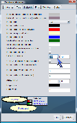
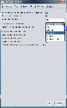

The Preferences menu lets the user customize the network display and tree display, as well as some global SamIam parameters. The user can set the colors for manually set evidence in the tree and has the option to display the probabilities for nodes in the tree by type. Besides color changes, the user can select the decimal precision displayed by the monitors and can choose to use node sizes from the file or to override them. The default size for a node is 80 by 40 pixels, but a maximum width and height of 9999 are allowed. Preview windows at the bottom of the network and monitor preference menus allow the user to judge the look of the network with the new options applied. Finally, the global parameters allow the user to select node labels instead of names if those are available, and also allows him to switch to different Java "Look and Feels". Among the latter are Windows look and feel, Metal and CDE/Motif (typical Unix look and feel). To reset to default preferences settings, select option "Reset Defaults."
 |
 |